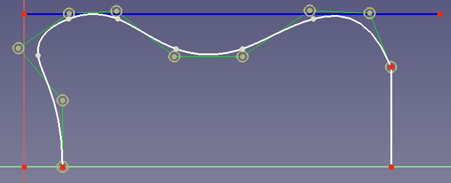

B-Splines/es
Esta página describe cómo utilizar las B-splines en FreeCAD. También ofrece información sobre qué son las B-splines y para qué aplicaciones son útiles.
Motivación
Si ya conoces las B-splines y su aplicación, puedes continuar directamente con la sección B-splines en FreeCAD.
Supongamos que quiere diseñar una pieza que debe producirse con una impresora 3D. La pieza debe tener un borde de esta manera:
{kind=link}
Hay que imprimir la pieza en dirección de la parte inferior del boceto hacia la parte superior. Las estructuras de soporte externas pueden no ser una opción. Por lo tanto, tiene que añadir un soporte directamente a su pieza. ¿Qué opciones tiene?
- Opción 1: se podría añadir una línea desde el punto (20, 0) hasta el punto (80, 40):
{kind=link}
Sin embargo, esta solución necesita mucho volumen y, por tanto, peso y material.
- Opción 2: puedes conectar los dos puntos con un arco de círculo. Para ahorrar volumen, el arco debe terminar tangencialmente en el punto (80,40). Entonces tu solución se ve así:
{kind=link}
BIEN. Pero en el fondo no necesitas apoyo inmediato.
- Opción 3: se podría ahorrar algo más de volumen si la conexión entre los 2 puntos es una curva que empieza tangencialmente en (0, 20) y termina tangencialmente en (80, 40):
{kind=link}
Así, una curva con la que se puedan conectar dos puntos tangencialmente a un punto de referencia puede ser muy útil para las construcciones. Las curvas de Bézier ofrecen esta característica.
Curvas Bézier
Derivación
Curvas de Bézier son polinomios que describen la conexión entre 2 puntos. El polinomio más sencillo que conecta 2 puntos es una recta () por lo que también las curvas de Bézier lineales son lineales:

Animación 1: Curva de Bézier lineal.
Sin embargo, un polinomio se vuelve primero útil cuando podemos controlarlo. Así que debe haber un punto entre los 2 puntos finales que nos permita definir cómo se conectan los puntos finales. Como en la opción 3 del ejemplo anterior, la curva es útil cuando comienza y termina tangencialmente a las líneas que cruzan los puntos finales. Y esta es una característica principal de las curvas Bézier. Así que vamos a añadir un punto de control entre los 2 puntos finales. La curva comenzará tangencialmente hacia este punto de control, lo que significa que es tangencial a la línea que podemos dibujar entre el punto inicial y el punto de control. Yendo hacia atrás desde el punto final, la curva también será tangente a la línea que podemos dibujar entre el punto de control y el punto final. La animación 2 muestra el aspecto de esta curva.

{{Caption|Animación 2: Curva cuadrática de Bézier. P1 es el punto de control.}
La animación aclara lo que es básicamente la curva: una transición de P0 a P2 al girar la línea P0-P1 para convertirse en la línea P1-P2. Por lo tanto, obtenemos la bonita característica de inicio/fin tangencial.
Una curva de este tipo sólo puede ser descrita por un polinomio cuadrático. (El número de vueltas a la izquierda/derecha + 1 es el orden necesario del polinomio. Un polinomio cuadrático tiene una sola vuelta, un polinomio cúbico tiene dos vueltas, y así sucesivamente). Por lo tanto, una curva de Bézier con un punto de control es una curva de Bézier cuadrática (de segundo orden).
Tener un solo punto de control a menudo no es suficiente. Tomemos el ejemplo de la motivación anterior. Allí, en la opción 3, terminamos la curva tangencialmente en la dirección x. ¿Pero cómo se pueden conectar los puntos (20, 0) y (80, 40) para que la curva termine tangencialmente en la dirección y? Para conseguirlo se necesita primero un giro a la derecha y luego a la izquierda, es decir, un polinomio cúbico (de tercer orden). Y eso significa que para una curva de Bézier necesitamos (o se puede decir que ganamos) un segundo punto de control. La animación 3 muestra una curva de Bézier cúbica.

Animación 3: Curva cúbica de Bézier.
Para responder a la pregunta, la solución con el final de la dirección y tangencial para el ejemplo es ésta:
{kind=link}
Reglas
En el texto anterior ya habrás notado algunas "reglas" para las curvas de Bézier:
- El grado del polinomio es también el grado de las curvas.
- Si necesitas vueltas, necesitas al menos una curva de Bézier de grado.
- Una curva de Bézier siempre comienza tangencialmente a la línea entre el punto inicial y el primer punto de control (y termina tangencialmente a la línea entre el último punto de control y el punto final).
Matemáticas
Si estás interesado en entender las matemáticas de fondo, aquí tienes lo básico.
Una curva de Bézier se calcula con esta fórmula:
n es por tanto el grado de la curva. Así, una curva de Bézier de grado n es un polígono de orden n. Los factores son, de hecho, las coordenadas de los puntos de control de las curvas de Bézier. Para una visualización, véase Control de las curvaturas de Bézier.
Si le interesa más, eche un vistazo a Las matemáticas de las curvas de Bézier con una derivación muy bien animada de las matemáticas de las curvas de Bézier.
B-Splines
Básicos
Este vídeo enumera al principio los problemas prácticos de las curvas de Bézier. Por ejemplo, que al añadir o cambiar un punto de control se modifica toda la curva. Estos problemas se pueden resolver uniendo varias curvas de Bézier. El resultado es un llamado spline, en particular un B-spline (spline de base). El vídeo también explica que una unión de curvas de Bézier cuadráticas forma un B-spline cuadrático uniforme y que una unión de curvas de Bézier cúbicas forma un B-spline cúbico uniforme.
De los vídeos podemos recoger "reglas" útiles para las B-splines:
- El primer y último punto de control es el punto final/inicial de la spline.
- Al igual que para las curvas de Bézier, las splines siempre comienzan tangencialmente a la línea entre el punto de inicio y el primer punto de control (y terminan tangencialmente a la línea entre el último punto de control y el punto final).
- Una unión de curvas de Bézier con el grado tiene puntos de control.
- Dado que en la mayoría de los casos se trabaja con B-splines cúbicas podemos afirmar entonces que puntos de control conducen a segmentos de Bézier y a su vez puntos de unión de segmentos.
- Una B-spline de grado ofrece en cada punto una derivada continua de orden .
- Para una B-spline cúbica esto significa que la curvatura (derivada de segundo orden) no cambia al viajar de un segmento al siguiente. Esta es una característica muy útil como veremos más adelante.
Si está interesado en más detalles sobre las propiedades de la B-Spline, eche un vistazo al vídeo MOOC Curvas 8.2: Propiedades de las curvas B-spline.
Basis
Since we will only introduce the basics of B-spline, we don't go here into the details.
The basis constructs the spline. Looking at the definition of Bézier curves in section Math we remember that a Bézier curve is a linear combination of polynomials with the x/y coordinate of each of the control points as a factor. These polynomials are called Bernstein polynomials.
As several Bézier curves are combined to form a spline, we get a set of Bernstein polynomials forming the spline (they are the basis). As we want to overcome the mentioned limitations of Bézier curves, we don't geometrically combine the different Bernstein polynomials of the Bézier curves, but define Bernstein polynomials over the whole geometrical range of the spline. So we don't combine the Bézier curves with its Bernstein polynomials, which would be
whereas is the i-th Bernstein polynomial with order and the coefficients are the point coordinates of the Bézier curve control points. But we use a different set of functions that are defined over the whole spline range:
- .
Note that in general , and the Bezier control points are different from B-spline control points .
The different are defined piecewise where the interval of every piece is the interval of the Bézier piece.
When the lengths of all pieces is equal, we speak of a uniform spline. (In literature this is often denoted as equal travel time per piece.)
To understand how the are the coordinates of the B-spline control points, see the first minute of this video.
Knot vector
As derived above, B-splines are created out of piecewise polynomials with continuity up to a certain derivative between the pieces. The endpoints of the piece's definition interval are called knots. For a spline defined over pieces, there are knots given by the so-called knot vector:
whereas
The knot vector comprises the knots of the basis functions that define the B-spline, see this video. The basis functions of a B-spline can be calculated using the knot vector and a creation algorithm, see this video.
The derivative until which continuity exists is given by the multiplicity . Therefore we can specify a vector with the multiplicity for every knot: . A knot on a spline with degree d and the multiplicity m tells that the curve left and right to the knot has at least an equal n order derivative (called Cn continuity) whereas .
B-splines no-uniformes
Una propiedad de los polinomios de Bernstein es que cuando se observan las diferentes partes de la S-spline Bézier, la longitud del recorrido de cada parte es la misma. (La longitud de la trayectoria suele llamarse tiempo de recorrido). Como puedes imaginar, puede ser útil tener B-splines cuyas partes Bézier tengan diferentes longitudes de trayectoria. Esto puede lograrse ponderando los diferentes polinomios:
Mathematically this is achieved by defining the different pieces at different intervals. If for example a B-spline is defined for the interval [0, 1], it is uniform if all its e.g. 5 pieces are also defined in this interval. If now is only defined in the interval [0, 0.6] (outside the interval it is set to zero), it is shorter and thus the spline becomes non-uniform.
As described above the parameters of the knots are described by the knot vector. So the knot vector stores the definition intervals. When now one piece gets another interval, also the knot vector changes, see this video for a visualization.
Rational B-splines
A further generalization can be made for B-splines by introducing weights for the control points. This way it can be controlled "how important" a control point is.
The equation for such a spline is
Notice that the function is no longer a polynomial, but a rational function, and these splines are called rational B-splines. Observe that when all are equal, the equation reduces to a regular non-rational B-spline. So non-rational B-splines are a subset of rational B-splines.
Estas B-splines no-uniformes y racionales (por la división) suelen llamarse NURBS'. Observando su fórmula, vemos que en realidad son una B-spline con una base ponderada :
B-splines en FreeCAD
FreeCAD ofrece la posibilidad de crear B-splines uniformes o no uniformes de cualquier grado en 2D a través del Ambiente de trabajo Croquizador.
Creación
Para crear B-splines, entra en un sketch y utiliza el botón de la barra de herramientas  Crear B-spline. A continuación, haz clic con el botón izquierdo para establecer un punto de control, mueve el ratón con el botón izquierdo para establecer el siguiente punto de control y así sucesivamente. Finalmente, haz clic con el botón derecho para terminar la definición y crear la B-spline.
Crear B-spline. A continuación, haz clic con el botón izquierdo para establecer un punto de control, mueve el ratón con el botón izquierdo para establecer el siguiente punto de control y así sucesivamente. Finalmente, haz clic con el botón derecho para terminar la definición y crear la B-spline.
Por defecto se crean splines cúbicas uniformes, excepto que no hay suficientes puntos de control para hacerlo. Así que cuando se crea una B-splinecon sólo 2 puntos de control, se obtiene por supuesto una spline que es curva lineal simple de Bézier, para 3 puntos de control se obtiene una curva cuadrática de Bézier, primero con 5 puntos de control se obtiene una spline B cúbica que consiste en 2 segmentos de Bézier.
Para crear B-splines periódicas (B-splines que forman una curva cerrada), utiliza el botón de la barra de herramientas  B-spline periódica. No es necesario fijar el último punto de control sobre el primero porque la B-spline se cerrará automáticamente:
B-spline periódica. No es necesario fijar el último punto de control sobre el primero porque la B-spline se cerrará automáticamente:
{kind=link}
Las B-splines también pueden generarse a partir de segmentos de croquis existentes. Para ello, seleccione los elementos y pulse el botón de la barra de herramientas Convertir geometría en B-spline.
{kind=link}
While creating a B-spline, its degree can be specified by pressing the D key. With this, the default to create a cubic B-spline if possible, can be overridden.
Cambio de grado
Para cambiar el grado, seleccione la B-spline y utilice el botón de la barra de herramientas  Aumentar grado de la B-spline o
Aumentar grado de la B-spline o  Decrementar grado de B-spline.
Decrementar grado de B-spline.
Nota: Disminuir el grado no puede revertir un aumento anterior del grado, ver la página Wiki Disminuir el grado de la B-spline para una explicación.
Cambiar la multiplicidad de nudos
Los puntos donde se conectan dos curvas Bézier para formar la B-spline se llaman nudos. La multiplicidad de nudos determina cómo se conectan las partes de Bézier, vea la página Wiki Aumentar multiplicidad de nudos para más detalles.
Para cambiar la multiplicidad de nudos, utilice los botones de la barra de herramientas  B-spline aumenta la multiplicidad de nudos o
B-spline aumenta la multiplicidad de nudos o  B-spline disminuye la multiplicidad de los nudos.
B-spline disminuye la multiplicidad de los nudos.
Nota: La creación de dos B-Splines conectadas entre sí no se unirá a una sola B-spline nueva. Por lo tanto, su punto de conexión no es un nodo. La única manera de obtener un nuevo nodo en una B-spline existente es disminuir el grado. Sin embargo, puede obtener muchos nudos nuevos. Por tanto, la mejor opción es redibujar la B-spline con más puntos de control.
Cambiar el peso
Alrededor de cada punto de control se ve un círculo amarillo oscuro. Su radio establece el peso del punto de control correspondiente. Por defecto todos los círculos tienen el radio 1. Esto se indica con una restricción de radio para el primer círculo del punto de control.
To create a rational B-spline the weights have to be made independent. To achieve that you can delete the constraint that all circles are equal and then set different radius constraints for the circles.
Si no se establece ninguna restricción de radio, también se puede cambiar el radio arrastrando:
{kind=link}
En el ejemplo de arrastre se ve que un peso alto atrae la curva hacia el punto de control mientras que un peso muy bajo cambia la curva como si el punto de control casi no existiera.
Cuando miras la función de creación para B-splines racionales no uniformes ves que un peso de cero llevaría a una división por cero. Por lo tanto, sólo se pueden especificar pesos mayores que cero.
Note: When dragging points, knots or widths, the circle diameters denoting the weight will change. This is because the diameter depends on the overall B-spline length for visualization reasons. The actual weight is not changed.
Editing Knots
New knots can be added using the  B-spline insert knot button.
B-spline insert knot button.
A knot is deleted by decreasing it's degree to 0 (i.e applying  B-spline decrease knot multiplicity when it's degree is 1).
B-spline decrease knot multiplicity when it's degree is 1).
Changing the parameter value of a knot is not yet supported.
Mostrar Información
Como la forma de una B-spline no dice mucho sobre sus propiedades, FreeCAD ofrece diferentes herramientas para mostrar las propiedades:
| Propiedad | Botón de la barra de herramientas |
| Grado | |
| Polígono de control | |
| Peine de curvatura | |
| Multiplicidad de nudos | |
| Pesos |
Limitaciones
De momento (FreeCAD 0.19) hay algunas limitaciones al usar splines que debes conocer:
- No puedes establecer restricciones tangenciales.
En este ejemplo

quieres asegurar que la spline toca la curva azul 2 veces tangencialmente. Esto sería útil porque la línea azul podría ser, por ejemplo, el límite espacial para su diseño. - No se puede insertar un nuevo punto de control entre dos puntos de control existentes seleccionados. No hay otra forma que redibujar la spline.
- No se puede eliminar un punto de control. También en este caso debe redibujar la spline
- No se puede crear una curva de desplazamiento para una B-spline utilizando la herramienta Borrador Desplazamiento.
{kind=link}
Casos típicos de uso
Según las propiedades de las B-splines, hay 3 casos de uso principales:
- Curvas que comienzan/terminan tangencialmente a una determinada dirección. Un ejemplo de esto es el ejemplo de motivación arriba.
- Curvas que describen diseños más grandes y proporcionan la libertad de cambios locales. Véase este ejemplo más abajo.
- Curvas que proporcionan una cierta continuidad (derivada). Véase este ejemplo más abajo.
Diseño
Tomemos por ejemplo el caso de que usted diseñe la carcasa de una batidora de cocina. Su forma deseada debe ser como esta:
{kind=link}
Para definir la forma exterior es ventajoso utilizar una B-spline porque cuando se cambia un punto de control para cambiar la curvatura en la parte inferior, la curvatura en el lado y la parte superior no se cambiará:
{kind=link}
Continuidad en las transiciones geométricas
Hay varios casos en los que es físicamente necesario tener una cierta continuidad superficial en las transiciones geométricas. Tomemos por ejemplo las paredes interiores de un canal de fluido. Cuando tienes un cambio en el diámetro del canal, no quieres tener un borde porque los bordes introducirían turbulencias. Por lo tanto, como en el ejemplo de motivación arriba, uno utiliza splines para este propósito.
El desarrollo de las curvas de Bézier fue impulsado inicialmente por la industria automovilística francesa. Además del ahorro de material y la reducción de la resistencia al flujo de aire, también había que mejorar el aspecto de los coches. Y cuando se observa el elegante diseño de los coches franceses de los años 60 y 70 se ve que las curvas de Bézier dieron un impulso al diseño de los coches.
Tomemos como ejemplo esta tarea en el diseño de coches: El guardabarros del coche debe "tener un buen aspecto". He aquí un croquis básico de nuestra tarea:
{kind=link}
"Tener un buen aspecto" significa que el cliente (potencial) mire el guardabarros y no vea reflejos de luz inesperados ni tampoco cambios repentinos en el reflejo de la pintura del automóvil. Entonces, ¿qué se necesita para evitar cambios en los reflejos? Mirar de cerca el guardabarros:
{kind=link}
En el área espacial por encima del borde, la intensidad de la luz reflejada es baja (denotada por la elipse roja) porque no se refleja luz directamente en la dirección del borde al ojo.
Cuando hay un borde, hay una zona espacial en la que la luz reflejada tiene menos intensidad y esto es lo que se nota al mirar el guardabarros. Para evitar esto necesitas un cambio continuo en la pendiente de tus elementos de superficie. La pendiente es la derivada de primer orden y como se explica en la sección Basicos, una B-spline de segundo grado (cuadrática) ofrece en cada punto una derivada continua de primer orden.
¿Pero es esto realmente suficiente? En el punto de transición geométrica tenemos ahora en ambos lados la misma pendiente, pero la pendiente puede cambiar de forma diferente en ambos lados. Entonces tenemos esta situación:
{kind=link}
Por lo tanto, también tenemos zonas espaciales en las que la intensidad de la luz reflejada es diferente. Para evitar esto, necesitamos en el punto geométrico de transición también una continuidad de la derivada de segundo orden y, por tanto, una B-spline cúbica.